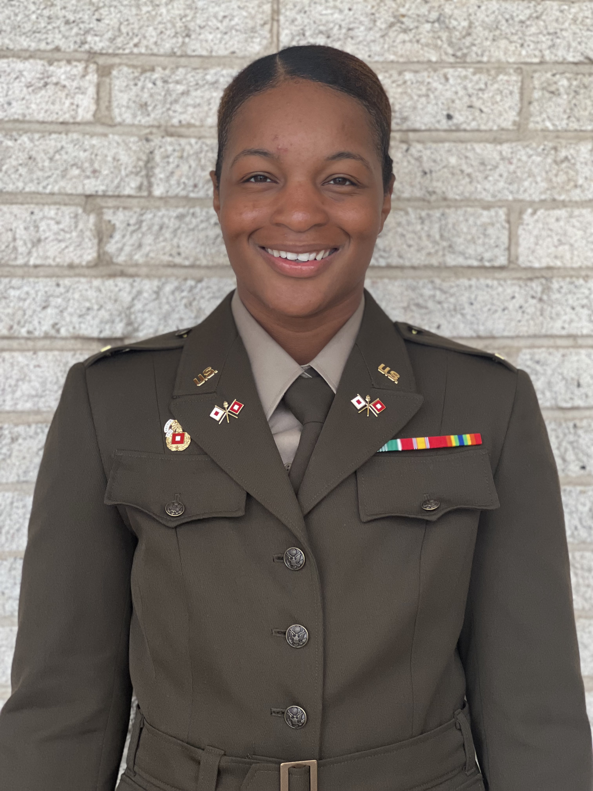

Misha Thornton

Summary
Accomplished 1LT in the military with a Top Secret security clearance and a track record of handling sensitive information. Currently serving as a project manager in software, seeking to pivot into a web development role with a focus on UI/UX design. Armed with a Computer Science degree and a passion for creativity, I am actively pursuing opportunities to advance my skills in web development and design. Eager to merge military discipline and project management expertise with technical acumen to excel in the dynamic world of web development.
Education
Southern University and A&M College
- Bachelors of Science, Computer Science (2015-2021)
Work Experience
Tyler Louisiana - Associate Project Manager
Baton Rouge, LA
April 2022 - Current
- Facilitated daily stand-up meetings, sprint planning, and sprint retrospective sessions to ensure the Agile
team adhered to Scrum principles and maintained a steady development pace.
- Collaborated with product owners and stakeholders to define project scope, requirements, and user stories,
ensuring a clear and prioritized product backlog.
- Maintained open and transparent communication with clients, keeping them informed of project progress,
changes, and any potential impacts on project timelines or scope.
- Created and maintained project documentation, including sprint burndown charts, user stories, and project
status reports, ensuring all team members and stakeholders had access to up-to-date information.
- Collaborated closely with product managers, developers, quality assurance teams, and other stakeholders to
ensure alignment of project goals with business objectives.
Army National Guard - First Lieutenant
Shreveport, LA
May 2016 - Current
- Conducted CMDP (Commander's Digital Master Plan) inspections to validate and enhance communication capabilities.
- Oversaw radio maintenance for the entire battalion, ensuring optimal functionality and readiness.
- Managed and enforced COMSEC (Communication Security) procedures to safeguard classified
information and maintain communication security standards.
- Conducted regular audits and inspections to ensure compliance with security protocols.
- Spearheaded the planning, implementation, and maintenance of battalion-level networks.
- Collaborated with IT personnel to address network vulnerabilities and enhance cybersecurity measures.
- Played a key role in developing communication plans for emergency response and crises.
Other